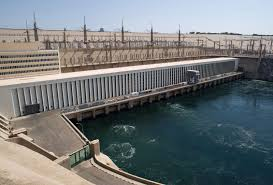
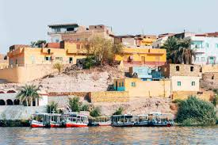

أسوان
أسوان مدينة السحر والجمال، تقع في جنوب مصر وتُعرف بجوها الدافئ ومعالمها النوبية المميزة. هي بوابة مصر إلى إفريقيا، وتجمع بين الطبيعة الخلابة والتاريخ العريق.
السد العالي
بُني في الستينات ليكون أحد أعظم المشاريع الهندسية في القرن العشرين. السد العالي لم يحمي مصر فقط من فيضانات النيل، بل وفر الكهرباء لمعظم أنحاء البلاد.
جزيرة فيلة

جزيرة أثرية ساحرة تضم معابد مكرسة للإلهة إيزيس. بعد بناء السد العالي، تم نقل المعابد إلى موقعها الحالي لإنقاذها من الغرق.
متحف النوبة

افتُتح عام 1997 ليعرض تاريخ وثقافة النوبة عبر آلاف السنين. المتحف يجمع بين العمارة الحديثة والمعروضات النادرة.
قرية غرب سهيل
قرية نوبية أصيلة على ضفاف النيل، حيث يمكن للسائح تجربة الحياة النوبية التقليدية، من البيوت الملونة إلى المأكولات المحلية.